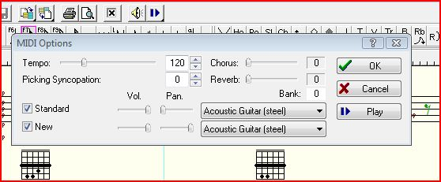

Lesson 3
Notes to Lesson 3
Lesson 3 gives us our first chord substitutions along with a comparison to what it's substituting. Also, it's our first lesson with some of the new keys, like F, Bb, and Ab. Mickey shows two lines: the old "Standard", and the "New", showing the chords that will substitute for the old familiar chords. In TablEdit I've entered each one of these staves in its own MIDI module, panning one to the left side and the other to the right. If you listen using headphones Standard will be in one ear and New in the other. By playing them together we can hear how the new chords fit against the old harmony, not really changing it, but rather coloring it with brighter colored chords.
What I recommend is first to listen to both parts of each exercise. Often Mickey takes a popular tune and uses the harmony to it. For example, in a later lesson, Mickey uses the harmony to "How High The Moon" in one instance. For those of you familiar with that tune, undoubtedly you'll agree that it's an interesting chord progression and really easy to spot. See if a tune comes to mind when listening to the harmony Mickey has given us in any of the lessons.
We can mute the "Standard" module. The easiest and fastest way to do this is:
Note that there is a 1 and a 2, each in their own box in the upper right hand corner of the TE window. These boxes select the active "MIDI" module to edit. Note there is a little green belt at the top of the little box. Click on the green belt in Box 1. The belt should change color to red. That means that module is muted. A second click on the belt will return it to green.
Location of the MIDI Module Selection Boxes
With module 2 active, let's listen to it for a couple of times. If a simple little melody comes to mind, try whistling it with TE's MIDI playback (that's a wonderful technique to develop and we all can do it.) Now let's try to play along with it. If it's too fast, slow it down a bit. I made all those modules in the early lessons " Π= 120" (which means 120 quarter notes in 60 seconds). In the upper left hand corner of the TE window, click on the yellow Speaker Icon. A window will appear with a "Tempo" control in the upper left hand corner. Change this number to something less than 120 until you find a speed that's comfortable. As you get comfortable, keep raising the tempo until you are comfortable with 120.

Location of the Tempo Control
Let me take this opportunity to talk a little bit about the rhythm I selected and used throughout the course. Mickey just uses a "/" for each beat in his book. My favorite rhythm guitarist of all time was Freddie Green, from the old Count Basie Orchestra (www.freddiegreen.com is a wonderful site with lots of ideas.) Freddie was as solid as the Atomic Time Standard at the US Naval Observatory. He has influenced rhythm guitarists since the 30's. His basic 4/4 rhythm had two dynamics. On beats 1 and 3 his chord sustain was a little longer, but maybe a little less stronger than beats 2 and 4. Beats 2 and 4 were very staccato and a little more accented. Listen to Chet Atkins' thumblick arrangements, especially the slower and medium tempo tunes (practically any tune from the Down Home album is a great example.) You'll hear that same phrasing in Chet's thumb.
I, just as Mickey, have left it up to you as to how you want to do the right hand part. Mickey, I'm sure, never dreamed that finger style pickers would be using his course; therefore, he assumed that the flat or straight pick would do the strumming. We as finger-stylists have a number of options, including Mickey's, at our disposal. We can imitate the flat pick style with our thumbs, or, as we did in Lesson 2, we can use the P I M A or a three finger pinch to produce a number of variations to that block or chunk style. That gives us fingerstyle players versatility that the pick guys can only dream of.
For those of us that use bare thumbs, at times we may want to hold our I finger with our thumbs, and use it like a pick.
Quite a bit of the phrasing comes from the left hand. It's important to listen to each exercise first to get the feel of the tempo. On beats 2 and 4 we'll release the pressure of our left hand immediately after we've picked the chord on those beats. This phrasing comes naturally after a very short time.
I invite you to experiment with your own right hand patterns. In a later lesson (8), Mickey talks about varying the right hand with arpeggios and string bass, and I've given more examples that I've discovered over the years.
At the end of the week on this lesson, reflect on the introduction to new keys. Didn't hurt much, did it? In fact, you probably haven't given it too much of a thought. Be honest!
Lessons 3 and 4 are the heart and soul of this course and everything we do in the future will have its roots in these two important lessons.
Just keep it FUN!